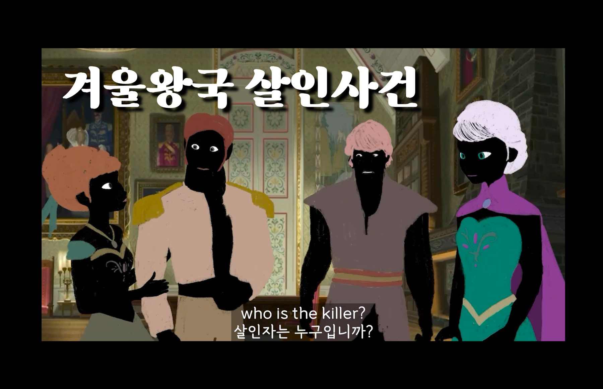

2023 · 스토리보드 · 애니매틱
Frozen Murder
가족 판타지 ‘겨울왕국’을 탐정 올라프가 이끄는 추리 스릴러로 바꾼 장르 전환 작업입니다.

같은 세계와 캐릭터라도 톤과 정보를 보여주는 방식만으로 서스펜스를 만들 수 있는지 실험한 장르 바꾸기 과제입니다. 관객은 탐정 올라프와 함께 단서를 따라가며 용의자를 좁혀 갑니다.
연출 · 이야기를 스릴러 5막 구조로 다시 짰고, 설원의 푸른색은 채도와 밝기를 낮추고 빨강·버건디를 단서와 위협의 색으로 썼습니다. 컷의 리듬을 점점 빠르게 하고, 소리가 화면보다 먼저 들어오는 편집으로 불안감을 만들었습니다. 직접 그린 스토리보드로 애니매틱까지 완성했습니다.